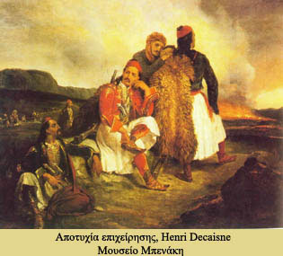

Προεπαναστατικά κινήματα
 Το έτος 1394 η πόλη, όπως και η ευρύτερη περιοχή, καταλαμβάνεται από τους Οθωμανούς του Βαγιαζήτ Α΄. Αρκετές φορές φαίνεται να επαναστατούν οι κάτοικοι των Σαλώνων κατά τη διάρκεια της τουρκοκρατίας. Η πρώτη επαναστατική κίνηση, μετά τη Ναυμαχία της Ναυπάκτου (1571), είχε άδοξο τέλος, ενώ η επανάσταση του 1687, κατά τη διάρκεια του τελευταίου τουρκοβενετικού πολέμου, κράτησε την πόλη ελεύθερη μέχρι το 1696, οπότε κυριεύθηκε από τους Τούρκους της Λιβαδειάς. Οι Σαλωνίτες ξεσηκώθηκαν και στα Ορλωφικά (1769-1774), ωστόσο το κίνημα αυτό κατεστάλη αμέσως από τους Τούρκους.
| |||